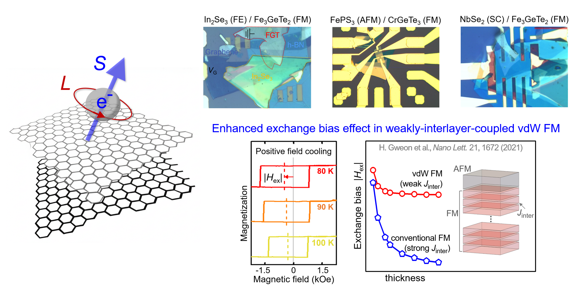
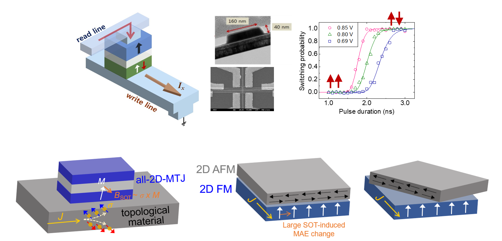
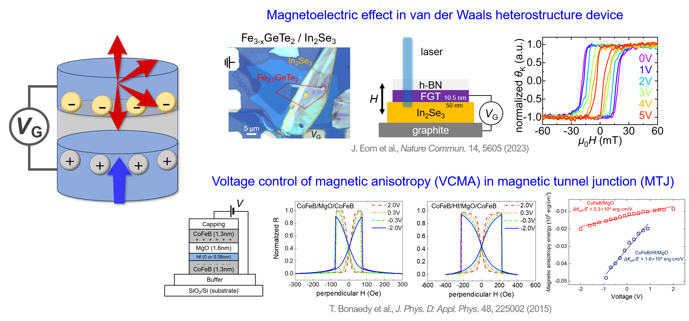
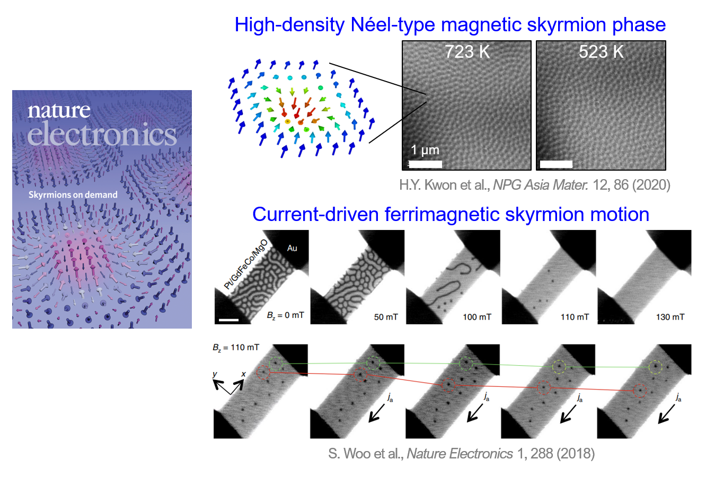

Our focus areas in spintronics and 2D magnetic materials
We fabricate and investigate 2D heterostructures with tailored interfaces, combining vdW magnetic materials with other quantum materials. We investigate fundamental properties originating from the hetero-interface, and engineer magnetic properties via the proximity effect between distinct materials.
We investigate various spin transport phenomena in nano-electronic devices. By utilizing magnetic, 2D, and topological materials, we aim to develop highly efficient spintronic devices and design novel devices with new functionalities.
We explore how electric fields and ionic gating techniques can be used to control magnetic states in 2D materials and thin films. This opens up opportunities for ultra-low-power spintronic devices.
We study magnetic domain phases of ultrathin magnetic films and 2D magnetic material based heterostructures. Topological properties and spin dynamics of nanoscale spin structures (e.g., magnetic skyrmions, chiral spin textures) are investigated.
